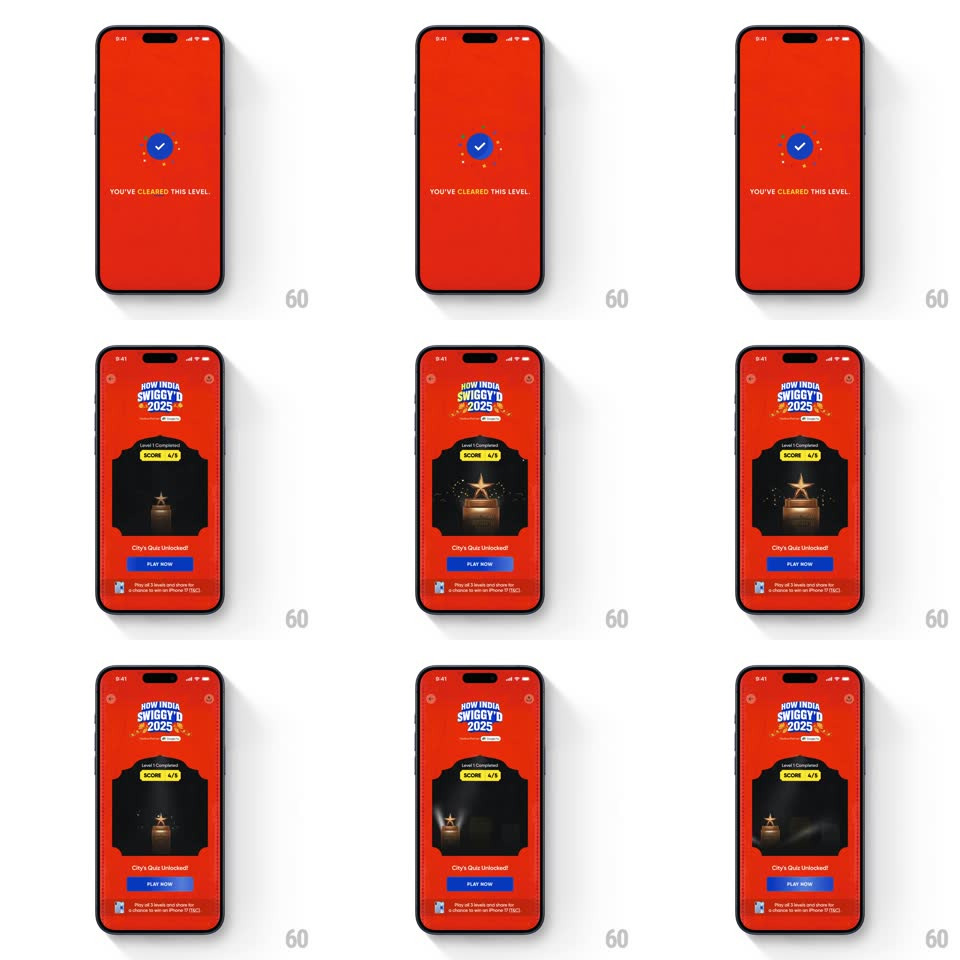

Media
Frame-by-frame

Rebuild this animation 1:1: Swiggy's "How India Swiggy'd 2025" level-cleared transition - a full-screen "YOU'VE CLEARED THIS LEVEL" moment bursts confetti, then scales down into the gamified dashboard card with its trophy and PLAY NOW.

Rebuild this animation 1:1: Swiggy's "How India Swiggy'd 2025" level-cleared transition - a full-screen "YOU'VE CLEARED THIS LEVEL" moment bursts confetti, then scales down into the gamified dashboard card with its trophy and PLAY NOW. ## Integration Integration: stack-agnostic spec - springs given as stiffness/damping, timed motions as duration + curve; map every value to your framework and animation library of choice. ## Scene State 1 (full-screen red): a blue check circle with orbiting confetti dots and "YOU'VE CLEARED THIS LEVEL" beneath. State 2 (dashboard): the red home with the "HOW INDIA SWIGGY'D 2025" badge, a dark alcove card reading "Level 1 Completed" with a lime "SCORE 4/5" pill and the gold star trophy, the "City's Quiz Unlocked!" line, a blue PLAY NOW button, and the iPhone-prize footnote. ## Motion spec Pattern: full-screen cleared state scaling down into a dashboard card. - The blue check pops in (scale 0 -> 1.15 -> 1, spring ~420/13) with its stroke drawing (200ms), and confetti dots burst outward from it (~14 pieces, radiating 90px with rotation, fading over 800ms). - "YOU'VE CLEARED THIS LEVEL" fades up letter-tight (10px rise, 300ms) as confetti settles. - After ~1.2s the whole state-1 composition scales down and recedes (scale 1 -> 0.85, fading, 350ms) while the dashboard rises to meet it (fade + 20px rise, 350ms). - The dashboard card arrives with its own micro-celebration: the trophy sparkles once (star flare, 300ms), the SCORE pill pops (spring ~400/14), and a second small confetti burst fires from the card's top edge (500ms). - "City's Quiz Unlocked!" fades in, then PLAY NOW slides up and fills blue (250ms), footnote last (200ms). ## Calibration - Two confetti moments, two scales: big radial burst on the full-screen state, small edge burst on the card - not the same effect twice. - The scale-down is a recede (scale + fade together), never a slide or wipe. ## Reduced motion Crossfade between the two states (300ms); confetti omitted. ## Don't miss - The check is blue on red - an unusual, deliberate contrast; don't recolor it to green. - The trophy inside the card is the same gold star trophy as the finals screen - visual continuity across levels.